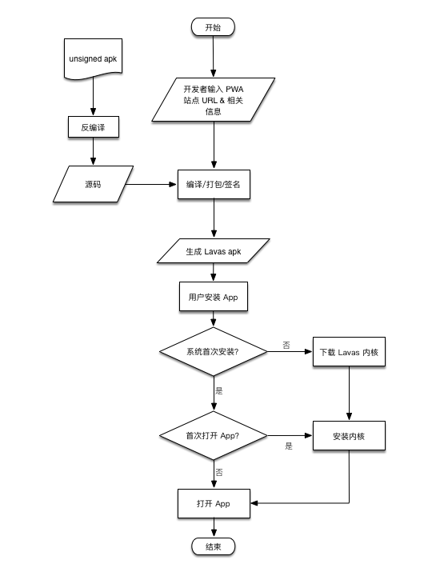

近日，百度 Lavas 团队正式发布了一套 Lavas App 解决方案 1.0。
为了跟上 Web App 用户体验至上的潮流，目前国外的站点都在 Google 的大力推动和倡导下如火如荼的进行着 Web 站点的 PWA 改造，收到了非常显著的效果。由于中国国内 Android 系统（由于目前 iOS 并未全面支持 PWA 特性，暂时先不讨论 iOS 的问题）和各大浏览器厂商的浏览器基于 Webkit 内核早期代码各自拉分支开发，随着时间的推移，导致现在支持的 PWA 特性情况不一致，并且各种浏览器所占的份额还不低，在国内目前还很难将 PWA 做到体验一致，所以目前中国国内的 PWA 改造进程推进的困难重重。
Lavas App 介绍
Lavas App 是一整套的将 PWA 站点打包成 App 的解决方案。可以由 Web 站点开发者将 PWA 站点打包成为一个 Android Apk 安装包，当用户安装 apk 包后，就会在桌面上出现一个 PWA 站点的图标入口。
背景
百度在推动 Open Web 技术发展的的背景下，为了构建更加开放良好的的 Web 生态，百度组建 Lavas 团队专门负责 PWA 相关技术调研和推广，针对国内浏览器对 PWA 的支持现状以及为了满足大多数中小站点的增加用户粘性的需求，推出了 Lavas App 解决方案。
Manifest.json 机制是能够在支持该特性的浏览器上使得 Web 站点可以被添加到桌面，并在手机桌面上构造一个 App 图标入口，这样就能将 Web 站点的入口转移到桌面，降低用户的查找成本，直接提升了用户粘度。
以下是 Android Chrome 浏览器添加到桌面的效果演示（演示资源较大，加载中，请稍候…）：
虽然添加到桌面是一个非常吸引人的功能特性，可是在国内，有的 Android 手机的某些版本的系统或者某些浏览器却不支持或者不完全支持 Manifest.json 机制，导致用户添加到桌面的效果也是不忍直视。既然各浏览器不能形成统一的用户体验，那为什么不能有个替代的 Hack 方案呢？Lavas App 解决方案就是这种背景下产生的，是一套解决 PWA 添加到桌面体验不一致问题的解决方案。
Lavas App 解决方案的发布，可以在生成的 App 中统一 PWA 体验，解决当前中国国内市场 Android 系统及浏览器对 PWA 相关特性支持程度参差不齐而导致的用户体验不一致的问题，Lavas App 解决方案面向的目标用户群是有意愿提升 Web App 的可用性和用户粘度的中小型站点的站长和开发者。
如何运作
Lavas App 整个解决方案的参与者有三个：开发者、Lavas App 打包平台、用户。
- 开发者开发自己的 PWA 站点，并且做好用户体验的优化和性能的调优，使站点性能良好，并支持基础的 PWA 特性。
- Lavas App 打包平台接收开发者提供的 PWA 站点 URL，打包成 Lavas Apk 安装包。
- 用户可以通过开发者在 PWA 站点的引导下载并安装 Lavas Apk 安装包，就可以达到类似添加到桌面的的效果。
使用 Lavas App 解决方案将 PWA 站点打包成 App 的操作的步骤如下（目前只是适用于 Android 用户）：
- 开发者开发自己的 PWA 站点。
- 通过线下 Lighthouse 检测工具检查站点的 PWA 支持情况。
- 提交 https://lavas.baidu.com/app 平台进行打包，生成 Lavas Apk 文件。
- 保存密钥码用户后续 Apk 升级（通常来说，之后 Lavas Apk 升级才需要开发者自行更新升级）。
- 通过合适的应用场景发布 apk 给用户安装，将自己的站点添加到手机桌面上。
通过打包后的 PWA 站点生成的 apk 已经集成了通用的 PWA 特性，比如 离线缓存、启动画面、主题变更 等，当 Apk 被用户安装之后，效果如下：
整个安装过程非常快，Lavas Apk 的大小约 300KB 左右，完全不用担心用户手机存储空间不够的问题，后面在介绍 Lavas Apk 相关的内容的时候，再深入的解析 Lavas Apk 是怎么工作的，看看她是如何能够做到极速下载安装的。
使用条件
当然，并不是所有的 Web 站点都可以使用 Lavas App 解决方案的，在完成打包之前是有一定的限制的。
- 必须要求站点是 HTTPS 的
- 站点必须集成 PWA 相关特性 - 离线缓存、manifest.json 等
- 站点首屏渲染性能需要达标（Lavas App 解决方案在打包的过程中会有动态审核机制，性能不达标，打包可能会失败）
- 需要开发者自行维护 Apk 版本（使用
密钥码）
Lavas App 解决方案之所以设定的这些使用条件，是希望通过 Lavas App 解决方案所打出来的 Apk 安装包在被用户安装和体验后都是具有良好的用户体验的。
Lavas Apk 介绍
Lavas Apk 是 Lavas App 解决方案中的打包平台所产生的产物，可以被用户直接安装的 Apk 文件。Lavas Apk 的底层是使用了 Lavas PWA 定制 Webview 内核，可以统一的为各个 Lavas Apk 安装后的应用保证 PWA 体验。
Lavas Apk 做为一个 Android 可安装的 Apk 包，是如何从一个 PWA 站点变成一个 App 的呢？又是如何保证只占用 300 KB 大小的存储空间呢？
下面是将 PWA 站点打包成 App 的流程图：
在这里需要说明的是：为了使 Apk 体积足够小从而下载安装速度快，并且因为内核模块是所有的 Lavas App 所依赖的模块，只需要下载一次就行，所以将 Apk 所依赖的内核模块被单独拆出，以独立的 zes 文件形式存储在云端，当本地文件系统没有此内核文件时，需要先从云端下载。
如果系统中从来没有下载过内核文件，用户第一次安装 Lavas Apk 的时候并不受影响，但是用户打开安装好的 App 的时候会初始化下载内核。
如果系统不是第一次安装 Lavas Apk，当用户安装 Lavas Apk 也不会受影响，在用户打开 App 时候，系统只会安装内核模块，并不会触发下载内核模块，所以当用户之前安装过 Lavas Apk 之后，首次打开 App 的速度会比系统第一次安装并打开 App 的启动速度快很多。
案例体验
Lavas App 的效果到底怎么样呢？在这里可以展示一下 百度爱玩 和 AliExpress 的例子。
百度爱玩
百度爱玩 是一个 Lavas 团队内部使用 Lavas 解决方案 开发的经过不断打磨的完整的真实的线上的 PWA showcase 产品，是一个智能聚合类的产品，百度爱玩项目已经支持了目前 PWA 能够支持的所有特性。
下面是 百度爱玩 打包成 Lavas Apk 之后的安装二维码，欢迎大家使用 Android 手机安装体验：
安装之后就可以在点击桌面的 百度爱玩 的图标之后体验和 百度爱玩 PWA 站点一样的功能效果。
AliExpress
AliExpress 是一个电商站点，是目前做的非常不错的 PWA 站点，其中不仅支持了 PWA 的相关特性，并且在 Matiaril UI 实现，登录、交易组件等细节都处理的非常好，同样在性能和可用性方面也做的非常好，对于 PWA 的细节处理的非常到位，值得各位 Web 开发者学习探索。
由于未经 AliExpress 方面允许，在这里就不挂 AliExpress 的 Lavas Apk 二维码引导安装了，但是我们可以看一下下面 AliExpress 的 Lavas Demo 效果，可以看一下 PWA 能够让你的站点变得有多 cool：
应用场景
Lavas App 解决方案给出了如何将 PWA 站点打包成一个 App 的方案，从而能够从很大程度上来统一 PWA 的用户体验，但是具体的应用场景是什么的？在这里推荐两种应用场景：在 PWA 站点引导用户下载 和 直接发布 Hybird App。
-
由于有的浏览器会有添加到桌面入口，有的没有添加到桌面入口，开发者可以在自己的 PWA 站点通过交互引导的方式引导用户下载并安装 Lavas Apk 从而达到 PWA 添加到桌面的效果，就像正式的从浏览器添加到桌面一样。
-
开发者也可以直接通过 PWA 站点的适配将 Lavas Apk 精细化开发为一个 Hybird App，后续 Lavas App 2.0 会尝试设计一套完善的 native API，比如调起系统接口、调起第三方 App、内置登录支付等解决方案等，用以支持这个应用场景。
最后
欢迎大家都来使用 Lavas App 解决方案打包平台 https://lavas.baidu.com/app，有任何问题或者建议欢迎通过 Lavas 官网 提供的任何渠道反馈
让我们一起为构建更 Open 更多姿多彩的 Web 生态努力！
欢迎大家扫码关注我的微信公众号「江哥乱谈」，关注我更多的文章动态。

本文为原创文章，会经常更新知识点以及修正一些错误，因此转载请保留原出处，方便溯源，避免陈旧错误知识的误导，同时有更好的阅读体验。
转载请注明来源：https://zoumiaojiang.com/article/publish-lavas-app-1-0/